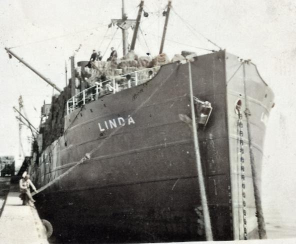
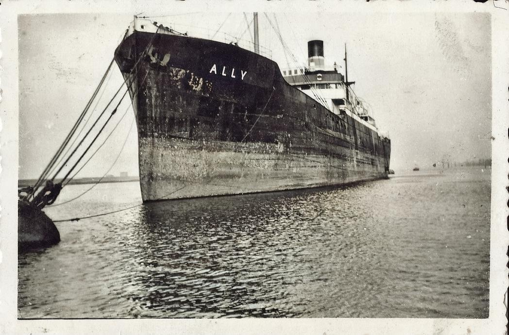

'Lost Boys of Estonia'?
Post war Albert appears to have acquired a different name: Alfred, which is used on his British passport although friends and work-mates called him 'Fred'. On leaving Kent c.1950 he and Bimbo went to work in the tinplate works near Swansea.
Initially, he lodged in the Morriston Hostel before settling into 49 Monterey Street, Manselton, Swansea. Once settled Albert joined the merchant navy in 1954.

According to his Seamen's Record Book his first ship was a steamer that regularly carried coal from Barry to London on the SS Hackney and then onto the north east in July 1954.
In June 1955 after disembarking in North Shields he found work on SS Gardenia for a trip further afield.

After a long journey to the West Indies he was looking forward to leave on-shore as he now had a British passport with a declaration (albeit false) that he was native Estonian. To his disgust he was refused entry at border control because Estonia was Russian occupied. The irony was not lost on Albert.
Rather than languish in self-pity Albert repainted the entire engine room as well as large parts of the upper deck. He was not disposed to being idle.
His bad luck did not stop there. On returning to Britain he discovered that his savings entrusted to a close friend had been spent.
We are not sure how this 'panned out' but that Albert remained friends with this person is testament to a good character.
To complete a woeful period Albert was hospitalised (as pictured) to have his tonsils removed.